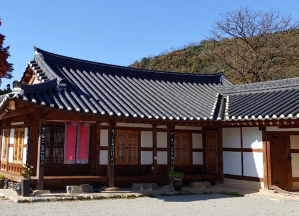

고택문화체험관
- 작성일2022-09-17
- 좋아요2231
- 조회수21

고택문화체험관
전통문화예술과 관련된 무형자산이 풍부한 정읍에 위치하며, 자체적으로 진행하는 음악무용극 공연, 전통문화예술체험 등을 통해 지역소재, 전통문화를 활용할 수 있도록 적극 지원하고 있음. 궁극적으로 전국 문화예술인들이 찾아와 상주할 수 있는 문예창작활동의 빌리지를 조성하고자 함. 창작실 3실, 세미나실 1실, 워크숍 룸 1실, 화장실, 샤워실, 세탁실 청년예술인들과 함께하는 정읍 옥정호 둘레길 트래킹, 무성서원 유네스코 세계문화유산 등재 기념 유림 초청 한시(漢詩) 작시회 등
위치
전라북도 정읍시 산외면 공동길 58